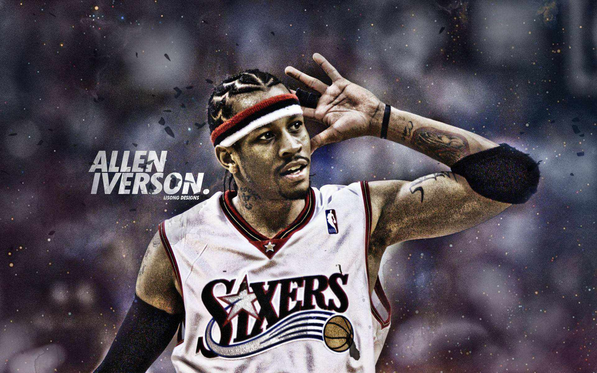
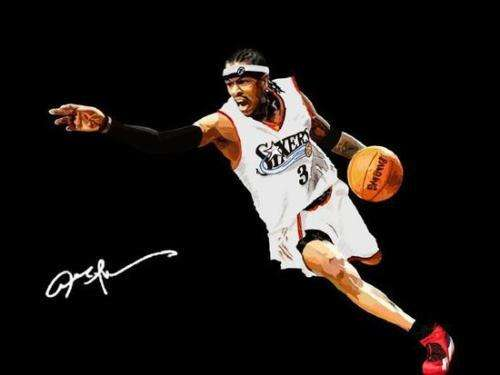

Allen iverson
The man who rocks the gods
职业生涯
1996 - 2013 年

- 
- 
阿伦·艾弗森在1996年NBA选秀中于第1轮第1位被费城76人队选中，成为NBA状元秀。在14年的职业生涯中，阿伦·艾弗森曾效力于76人、掘金、灰熊以及活塞四支NBA球队，新秀赛季荣获最佳新秀以及新秀挑战赛MVP，4次荣膺NBA得分王，3次荣膺NBA抢断王，2000-10年连续11次入选NBA全明星阵容并夺得2次NBA全明星MVP，3次入选NBA最佳阵容一阵，3次入选NBA最佳阵容二阵，2006年入选NBA最佳阵容三阵。 2000-2001赛季，艾弗森打出了生涯最好表现，当选该赛季的NBA常规赛MVP，并帮助76人队打入NBA总决赛，但未夺冠
个人荣誉
1996 - 2013 年
- 1997 1996－1997赛季 新秀全明星MVP、年度最佳新秀、新秀第一队
- 1999 1998-1999赛季 常规赛得分王（NBA史上最矮的得分王）、最佳阵容第一队
- 2001 2000-2001赛季 常规赛得分王、抢断王、最佳阵容第一队、全明星MVP、常规赛MVP
- 2002 2001-2002赛季 最佳阵容第二队、常规赛得分王、抢断王
- 2003 2002-2003赛季 最佳阵容第二队、常规赛抢断王
- 2005 2004-2005赛季 全明星MVP、得分王、最佳阵容第一队
人生经历
孩童时期
1984年，阿伦.艾弗森的母亲安拉着9岁艾弗森去篮球场练球，其实艾弗森并不喜欢篮球，但他看到橄榄球队员都在篮球场打篮球，艾佛森也就开始喜爱篮球这个运动了。
高中时期
1993年艾弗森作为圣地高中的四分卫带领校美式足球队夺得了弗吉尼亚高中冠军，同时他还带领校篮球队获得同样的荣誉。同年2月14日艾弗森和三个朋友在“环线“保龄球馆与一群白人少年发生争执，并迅速升级为50多人参与的斗殴，有超过20人在这场激战中身负重伤。地方法院迅速对此案作出了判决：4名黑人都被判入狱15年，艾弗森带头滋事被判入狱5年。1993年12月，在最高法院在全国有色人种协进会（NAACP）的帮助下，艾弗森经过不懈的努力打赢了官司，艾弗森仅入狱了4个月便获得假释。
初进nba
1996年的选秀大会上，阿伦·艾弗森被费城76人队以第一轮第一顺位选中，成为了NBA史上最矮的选秀状元并与球队签下了3年900万美元的合同。